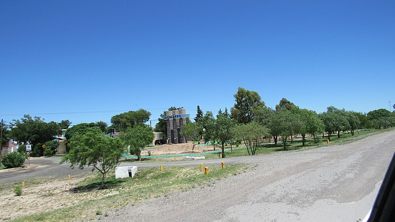
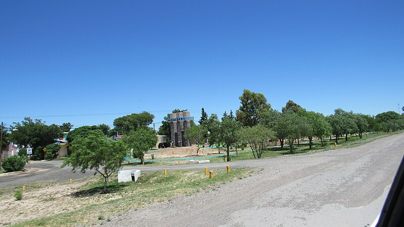

Realizaron tareas de mantenimiento y mejoras en la Barrera Fitosanitaria de Desaguadero
Se realizaron tareas de mejora en sistemas eléctricos y de seguridad.
Leer másBienvenidos a la página oficial de nuestro municipio. Aquí encontrará información sobre servicios, noticias y eventos locales.
Se realizaron tareas de mejora en sistemas eléctricos y de seguridad.
Leer más
Se trata del relanzamiento de Educador Google nivel 1 y Google Nivel 2.
Leer más
JEl gobernador, Claudio Poggi junto a su gabinete encabezará una nueva gira.
Leer más 

Dirección: Calle sin Numero 850
Teléfono: +549 2664377798
Email: intendencia@municipalidadedesaguadero.com